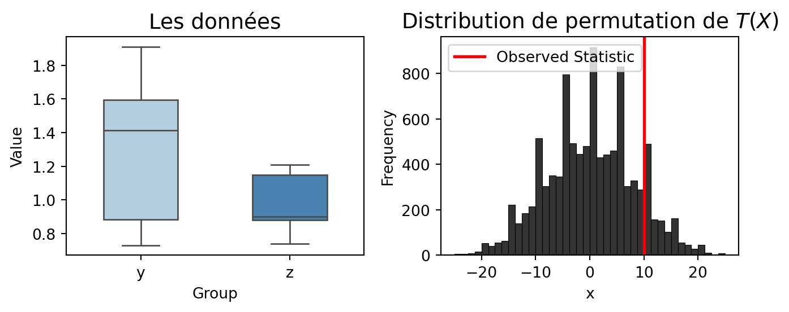

import numpy as np
# Inputs : x (array) or (list) : sample.
#func : function : statistic function.
#nsamp : int : number of samples.
# Outputs : dictionnary : statistic, sample_perm, p-value.
def symmetry_perm(x, func=np.mean, nsamp =9999):
x = np.asarray(x)
n = x.shape[0]
tobs = func(x)
# Generate nsamp samples sign permutation
eps = np.random.choice([-1, 1], size=(nsamp, n), replace=True)
# Compute the test statistic for each sample
permuted = eps * x
try:
tperm = func(permuted, axis=1)
except TypeError:
tperm = np.apply_along_axis(func, 1, permuted)
# Compute the p-value
count = np.sum(np.abs(tperm) >= np.abs(tobs))
p = (count + 1) / (nsamp + 1)
return {"statistic": tobs, "sample_perm": tperm, "p-value": p}Resampling methods : Permutation Test
Introduction
Resampling methods are a key part of statistical inference. It is important to understand them in order to have accurate estimates, validate models, and dealt with the uncertainty of the data. Indeed, the resampling methods mesure the variability of statistics by using subsamples from the original data. There are least four resampling methods: bootstrap, jackknife, permutation test, and cross-validation :
| Resampling method | Applications | Type of resampling |
|---|---|---|
| Efron’s bootstrap | Bias, variance, confidence intervals, hypothesis testing | With replacement |
| Permutation test | Hypothesis testing | Without replacement |
| Jackknife | Bias, variance, confidence intervals | Leave-one-out |
| Cross-validation | Model selection, validation | Leave-p-out |
This document will focus on the permutation test.
General framework of the hypothesis test
The goal of statistics is to learn about a population by studying a sample. Often, we don’t know the process that produced the sample. Mathematically, the sample is a random variable.
Let \(X = (X_1, X_2, \ldots, X_n)\) be a sample of size \(n\) drawn from a population or a probability distribution \(P\).
A hypothesis is a declarative statement about the population or the probability distribution. A hypothesis test involves two complementary hypotheses :
- The null hypothesis \(H_0\) : “\(P \in \mathcal{P}_0\)” where \(\mathcal{P}_0\) is a set of probability distributions.
- The alternative hypothesis \(H_1\) : “\(P \notin \mathcal{P}_0\)”.
A test \(\phi\) is a decision procedure between \(H_0\) and \(H_1\), given the sample \(X\). \[ \phi(x) = \begin{cases} 1 & \text{reject} H_0 \\ 0 & \text{It is not reject} H_0 \end{cases} \]
A test \(\phi\) is defined using a real-valued test statistic \(T(X)\) :
- \(\phi(x) = \mathbb{1}_{\{T(x) > t_{\alpha}\}}\) where \(t_{\alpha}\) is the critical value of the test at level \(\alpha\). \(H_0\) is rejected when \(T(x) > t_{\alpha}\).
- \(\sup_{P \in \mathcal{P}_0} \mathbb{E}_P \{\phi\} \leq \alpha : \text{ The law of } T \text{ under } H_0 \text{ is known}\).
The p-value of a test is the smallest level \(\alpha\) at which the null hypothesis is rejected : \[ p(x) = \inf \{ \alpha : T(x) > t_{\alpha} \} \]
To construct a test, it is necessary to know the distribution or the law of the test statistic under the null hypothesis in other to compute :
- The critical value \(t_{\alpha}\).
- The p-value \(p(x)\).
Motivation of the permutation test
In pratice, the law of the test statistic T is often approximated asymptotically, or requires verifying parametric assumptions that are hard to justify (eg. normality, homoscedasticity, etc.).
The permutation test is a non-parametric test. It can be used :
When the size of the sample is small to approximate the law of the test statistic.
When parametric test is not valid.
General framework of the permutation test
Principle : Working on the observed data to avoid having to assume a specific distribution for the observed sample.
General Principle
The statistical Model : \(X \sim P, P \in \mathcal{P}\). \(P\) is a probability defined on \(\mathbb{R}^N\) and \(\mathcal{P}\) is a set of probability distributions on \(\mathbb{R}^N\).
The hypothesis test : \(H_0 : P \in \mathcal{P}_0\) vs \(H_1 : P \notin \mathcal{P}_0\). \(\mathcal{P}_0\) is a subset of \(\mathcal{P}\).
Group of Transformations : \(G\) has the size \(|G| = M\). \(G\) has an idendity element \(e\). The operation inside \(G\) is associative : \(g_1, g_2 \in G \Rightarrow g_1 \cdot g_2 \in G\). For each \(g \in G\), there is an inverse element \(g^{-1}\) such that \(g \cdot g^{-1} = g^{-1} \cdot g = e\).
\(G\) acts on \(\mathbb{R}^N\) : \(g \in G, x \in \mathbb{R}^N \Rightarrow g \cdot x \in \mathbb{R}^N\). where \(e \cdot x = x\) and \(g_1 \cdot (g_2 \cdot x) = (g_1 g_2) \cdot x\)
Permutation Test : The permutation test is a test that uses the exchangeability assumption to construct a test.
Let’s define the decision function \(\phi\) and the p-value \(p\) of the permutation test :
Application of the permutation test
The permutation test has many applications in statistics :
Symmetry test : The permutation test can be used to test the symmetry of a distribution. An example is the Wilcoxon sign-rank test for paired samples.
Independence test : which help assess the effect of one variable on another. An example is the Spearman test.
Comparison of two samples : The permutation test can be used to compare the distribution of two samples. For example to assess if two samples have the same law.
Symmetry test
Statistical Model : \(X = (X_1, X_2, \ldots, X_n)\overset{i.i.d}{\sim} F\) where \(F\) is a Cumulative Distribution Function (CDF) defined on \(\mathbb{R}\). \(X = (X_1, \dots, X_n) \in \mathbb{R}^n\)
The hypothesis test : \(H_0 : F \text{ is symmetric around } 0\) vs \(H_1 : F \text{ is not symmetric around } 0\).
The transformation group : \(G = \{-1, 1\}^n\). with cardinality \(|G| = 2^n\).
Test statistic : The test statistic can be defined by :
T(X) = |\(\overline{X}\)| where \(\overline{X} = \frac{1}{n} \sum_{i=1}^n X_i\).
\(T(X) = \sum_{i=1}^n R_i sign(X_i)\) where \(R_i\) is the rank of \(|X_i|\) in \(|X_1|, |X_2|, \ldots, |X_n|\).
The code below is an implementation of the permutation test for the symmetry test.
Let’s apply the symmetry test to a central normal distribution.
#np.random.seed(42)
n = 100
x = np.random.normal(0, 1, n)
res = symmetry_perm(x, func=np.mean, nsamp=9999)
print(f"Statistic : {res['statistic']},"
f" p-value : {res['p-value']}")Statistic : 0.016915530800782546, p-value : 0.8739Distribution of the mean and the ergodic mean p-values.
B = 6000
# P value for a range of nsamp from 1 to B
p_values = [symmetry_perm(x, func=np.mean, nsamp=i)["p-value"] for i in np.arange(1, B)]
import matplotlib.pyplot as plt
import seaborn as sns
fig, axes = plt.subplots(1, 2, figsize=(8, 3))
## üü¢ Histogram: Distribution of Test Statistic
sns.histplot(res['sample_perm'], ax=axes[0], kde=True, color='#1f77b4', alpha=0.7)
axes[0].axvline(res['statistic'], color='red', linestyle='--', linewidth=2, label='Observed Statistic')
axes[0].set_title('Distribution of the Test Statistic', fontsize=14, fontweight='bold')
axes[0].set_xlabel('Test Statistic', fontsize=12)
axes[0].set_ylabel('Frequency', fontsize=12)
axes[0].legend(fontsize=12)
# No grid for better readability
axes[0].grid(False)
## üîµ Line Plot: Ergodic Mean of the P-value
axes[1].plot(np.arange(1, B), p_values, color='#ff7f0e', linewidth=2)
axes[1].axhline(np.mean(p_values), color='black', linestyle='--', linewidth=2, label='Mean p-value')
axes[1].set_title('Ergodic Mean of the P-value', fontsize=14, fontweight='bold')
axes[1].set_xlabel('Iterations', fontsize=12)
axes[1].set_ylabel('P-value', fontsize=12)
axes[1].legend(fontsize=12)
axes[1].grid(False)
# Annotation for Mean P-value
axes[1].text(0.6 * B, np.mean(p_values), f"Mean p-value: {np.mean(p_values):.4f}",
fontsize=12, color='black', fontweight='bold')
# Improve layout
plt.tight_layout()
# Show the plot
plt.show()
Symmetry test : Wilcoxon sign-rank test
One of the most popular permutation tests is the Wilcoxon sign-rank test. It allows to test for example if two paired samples come from the same distribution. To accomplish this, the Wilcoxon sign-rank test assess if the difference between the two samples is symmetric around 0.
The test statistic is defined by :
\[ T(X) = \sum_{i=1}^n R_i sign(X_i) \]
where \(R_i\) is the rank of \(|X_i|\) in \(|X_1|, |X_2|, \ldots, |X_n|\).
For the application of the Wilcoxon sign-rank test, for 10 patients, we have data on the number of hours of sleep after taking a drug and after taking a placebo. The goal is to test if the number of hours of sleep is the same after taking the drug and the placebo.
from scipy.stats import wilcoxon, PermutationMethod
import pandas as pd
treatment = np.array([6.1,7.0,8.2,7.6,6.5,8.4,6.9,6.7,7.4,5.8])
placebo = np.array([5.2,7.9,3.9,4.7,5.3,5.4,4.2,6.1,3.8,6.3])
z = treatment - placebo
# Stat test
statW = lambda z: (pd.Series(np.abs(z)).rank() * np.sign(z)).sum()
# Test per permutation
res = symmetry_perm(z, func=statW, nsamp=59999)
print(f"Statistic : {res['statistic']},"
f" p-value : {res['p-value']}")Statistic : 45.0, p-value : 0.0199The p-value is 0.01985 less than 0.05, we reject the null hypothesis. The number of hours of sleep is not the same after taking the drug and the placebo.
Independence test
Let’s define the framework of the independence test :
Statistical Model : \((Y_1,Z_1), (Y_2,Z_2), \ldots, (Y_n,Z_n) \overset{i.i.d}{\sim} F\) where \(F\) is a joint distribution defined on \(\mathbb{R}^2\). X = \((Y, Z) = (Y_1, Z_1), (Y_2, Z_2), \ldots, (Y_n, Z_n)\), matrix of size \(n \times 2\).
The hypothesis test : \(H_0 : F(y,z) = F_Y(y)F_Z(z)\) vs \(H_1 : F(y,z) \neq F_Y(y)F_Z(z)\). where \(F_Y\) and \(F_Z\) are the marginal distributions of \(Y\) and \(Z\).
The transformation group : G is the permutation group of size \(|G| = n!\). G acts on \(\mathbb{\textbf{M}}^{2 \times n}\) by : \[ \sigma \cdot X = \bigl((y_1, z_{\sigma(1)}), (y_2, z_{\sigma(2)}), \ldots, (y_n, z_{\sigma(n)})\bigr) \] For \(\sigma \in G\) and \(X = (Y, Z)\).
The test statistic (association measure or correlation) is defined by :
T(X) = \(\sum_{i=1}^n (Y_i - \overline{Y})(Z_i - \overline{Z})\), pearson correlation.
T(X) = \(\sum_{i=1}^n R_i(Y) R_i(Z) - \frac{4(n+1)^2}{n}\), Spearman correlation.
For example, We want to study the effect of the molar ratio of sebacic acid to the intrinsic viscosity of copolyster. The data is given by :
molar_ratio = np.array([1, 0.9, 0.8, 0.7, 0.6, 0.5, 0.4, 0.3])
viscosity = np.array([0.45, 0.2, 0.34, 0.58, 0.7, 0.57, 0.55, 0.44 ])
# Permutation procedure
def indep_perm(x, y, func, nsamp =9999):
x = np.asarray(x)
y = np.asarray(y)
n = x.shape[0]
tobs = func(x, y)
perms = np.array([np.random.permutation(n) for _ in range(nsamp)])
tperm = np.array([func(x, y[perm]) for perm in perms])
# Compute the p-value
count = np.sum(np.abs(tperm) >= np.abs(tobs))
p = (count + 1) / (nsamp + 1)
return {"statistic": tobs, "sample_perm": tperm, "p-value": p}
## Pearson correlation
statPearson = lambda x, y: np.corrcoef(x, y)[0, 1]
res = indep_perm(molar_ratio, viscosity, func=statPearson, nsamp=9999)
print(f"Statistic : {res['statistic']},"
f" p-value : {res['p-value']}")Statistic : -0.4633642874743305, p-value : 0.2446It can be compared to the Pearson correlation test.
from scipy.stats import pearsonr
stat, p = pearsonr(molar_ratio, viscosity)
print(f"Statistic : {stat}, p-value : {p}")Statistic : -0.46336428747433034, p-value : 0.24754088204924157Comparison of two samples
The general framework of the comparison of two samples is :
Statistical Model : Two independent samples \(X = (X_1, X_2, \ldots, X_n) \overset{i.i.d}{\sim} F\) and \(Y = (Y_1, Y_2, \ldots, Y_m) \overset{i.i.d}{\sim} G\) where \(F\) and \(G\) are two distributions defined on \(\mathbb{R}\).
The hypothesis test : \(H_0 : F = G\) versus \(H_1^{less} : F \leq G\) or \(H_1^{greater} : F \geq G\) or \(H_1^{diff} : F \neq G\).
The transformation group : \(G\) is the permutation group of size \(|G| = n! \times m!\). \(G\) acts on \(\mathbb{R}^{n+m}\) by : \[ \sigma \cdot (X, Y) = (X_{\sigma(1)}, X_{\sigma(2)}, \ldots, X_{\sigma(n)}, Y_{\sigma(n+1)}, Y_{\sigma(n+2)}, \ldots, Y_{\sigma(n+m)}) \]
The test statistic is defined by :
T(X) = |\(\overline{X} - \overline{Y}\)|, difference of means.
\(T(X) = \left| Y\left(\left\lfloor \frac{n}{2} \right\rfloor\right) - Z\left(\left\lfloor \frac{n}{2} \right\rfloor\right) \right|\), difference of medians.
The code below is an implementation of the comparison of two samples by permutation test.
from scipy.stats import rankdata
def twosamp_perm(y,z, func, nsamp =9999, alternative="two-sided"):
y = np.asarray(y)
z = np.asarray(z)
m = len(y)
n = len(z)
N = m + n
# Concatenate the two samples into one array
x = np.concatenate([y, z])
# Compute the observed test statistic
tobs = func(y, z)
# Generate nsamp permutations: for each permutation, randomly select m indices from 0 to N-1
# (Note: Python indices are 0-based, unlike R which is 1-based.)
sig = np.array([np.random.choice(N, size=m, replace=False) for _ in range(nsamp)])
# Compute test statistic for each permutation
tperm = np.empty(nsamp)
for i, indices in enumerate(sig):
# The complement of the chosen indices: all indices not in 'indices'
complement = np.setdiff1d(np.arange(N), indices)
tperm[i] = func(x[indices], x[complement])
# Calculate the p-value according to the specified alternative hypothesis
if alternative == "two.sided":
p = np.sum(np.abs(tperm) >= np.abs(tobs)) + 1
elif alternative == "greater":
p = np.sum(tperm >= tobs) + 1
elif alternative == "less":
p = np.sum(tperm <= tobs) + 1
else:
raise ValueError("alternative must be one of 'two.sided', 'greater', or 'less'")
p_value = p / (nsamp + 1)
# Return results in a dictionary
return {
"statistic": tobs,
"sample_perm": tperm,
"p-value": p_value
}
# Simulate data
y = np.random.normal(1, 1, 20)
z = np.random.normal(0, 1, 10)
mean_diff = lambda y, z: np.mean(y) - np.mean(z)
res = twosamp_perm(y, z, func=mean_diff, nsamp=9999, alternative="greater")
print(f"Statistic : {res['statistic']},"
f" p-value : {res['p-value']}")Statistic : 0.9476770542185005, p-value : 0.0239Example :
yi: placental membrane permeability at term.
zj: permeability measured between 12 and 26 weeks of gestation.
The statistic test is given by the wilcoxon statistic rank :
\[ T(X) = \sum_{i=1}^n R_i(Y) -n(N+1)/2 \]
The alternative of interest is that the placental membrane is more permeable during full-term pregnancy.
y = np.array([0.80, 0.83, 1.89, 1.04, 1.45, 1.38, 1.91, 1.64, 0.73, 1.46])
z = np.array([1.15, 0.88, 0.90, 0.74, 1.21])
# Wilcoxon statistic rank
rankwilcoxon = lambda y, z: np.sum(
rankdata(np.concatenate([np.asarray(y), np.asarray(z)]))[:len(y)]
) - len(y) * (len(y) + len(z) + 1) / 2
res = twosamp_perm(y, z, func=rankwilcoxon, nsamp=9999, alternative="greater")
print(f"Statistic : {res['statistic']},"
f" p-value : {res['p-value']}")Statistic : 10.0, p-value : 0.1265 #--- Create Figure ---
fig, axes = plt.subplots(1, 2, figsize=(7, 3))
# --- Left Plot: Boxplot of Data ---
sns.boxplot(data=[y, z], ax=axes[0], width=0.5, palette="Blues", fliersize=3)
axes[0].set_xticks([0, 1])
axes[0].set_xticklabels(["y", "z"])
axes[0].set_title("Les données", fontsize=14)
axes[0].set_xlabel("Group")
axes[0].set_ylabel("Value")
# --- Right Plot: Permutation Distribution ---
sns.histplot(res['sample_perm'], bins=40, color="black", alpha=0.8, ax=axes[1])
axes[1].axvline(res['statistic'], color='red', linestyle='-', linewidth=2, label="Observed Statistic")
axes[1].set_title(r"Distribution de permutation de $T(X)$", fontsize=14)
axes[1].set_xlabel("x")
axes[1].set_ylabel("Frequency")
axes[1].legend()
plt.tight_layout()
plt.show()